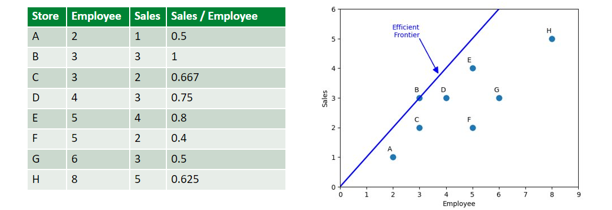
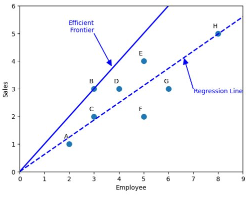

Chương 1 Tháng 01 2024
1.1 Ngày 15
Hôm nay mình đã đọc gì
1.1.1 Efficient Feature Selection via Genetic Algorithms
Đây là một bài viết trên Medium nói về việc sử dụng Generic Algorithms. Generic Algorithms Tiếng Việt được gọi là Giải thuật di truyền, là thuật toán đầu tiên mình học được ngay khi bắt đầu học môn Máy học thống kê ở trường. Mình đã áp dụng nó vào bài toán tìm nghiệm xấp xỉ của một phương trình đa thức.
Về Giải thuật di truyền có các định nghĩa chính:
Population (dân số)
Xác suất đột biến
Xác suất lai chéo
Chiến lược chọn các phần tử con
Để hiểu rõ hơn các bạn có thể tham khảo ở Wiki (https://en.wikipedia.org/wiki/Genetic_algorithm)
Tóm gọn lại bài viết này xem danh sách N features là một chuỗi gen có độ dài là N và chứa các giá trị 1 nghĩa là feature tại vị trí i sẽ được chọn và bằng 0 nghĩa là feature tại vị trí i sẽ không được chọn
Thuật toán sẽ khởi tạo Một quần thể gồm 8 chuỗi gen khác nhau và tiến hành đột biến hoặc lai chéo giữa chúng để ra chuỗi gen mới -> tập Features đã được chọn. Sau đó sẽ dùng phương pháp đánh giá. Bài này sử dụng code dựa trên thư viện https://github.com/DEAP/deap
Và code đầy đủ có tại https://github.com/FlorinAndrei/fast_feature_selection
1.1.2 Data Envelopment Analysis
Hôm nay mình đã đọc Chương một của cuốn sách Data Envelopment Analysis Của tác giả William W. Cooper , Lawrence M. Seiford , Kaoru Tone.
Cuốn sách này tuy xuất bản năm 2007 nhưng khá có ích đối với việc mình đang làm là đánh giá chất lượng.
Đánh giá Hiệu suất là gì?
Khi chúng ta có đầu vào, và nhận được kết quả, chúng ta hay đánh giá hiệu suất của kết quả xem với đầu vào như thế thì kết quả liệu có tốt không. Một số ví dụ cơ bản: Giá thành/sản phẩm, Lợi nhuận/sản phẩm.
\[ \frac{Output}{Input} \]
Công thức trên được gọi là thước đo hiệu quả. Chúng ta có thể mở rộng công thức trên với Nhiều đầu vào (Inputs) và nhiều đầu ra (Outputs)
 Độ dốc của đường nối với mỗi điểm và gốc tọa độ tương ứng với Sales/ Employee ( hiệu quả).
Đường có độ dốc cao nhất (nối với điểm B) được gọi là Efficient Frontier (Đường biên hiệu quả).
Các điểm sẽ nằm cùng 1 phía so với đường thẳng, hoặc ở trên, hoặc ở dưới.
Vì đường biên này bao bọc các điểm dữ liệu, nên phân tích này được gọi là Data Envelopment Analysis.
Chúng ta có thể vẽ một đường thống kê hồi quy y=0.622x để ước lượng mối quan hệ tuyến tính giữa input và output.
Đường hồi quy này đi qua chính giữa của tập dữ liệu, do đó chúng ta có thể xem các điểm ở phía trên đường là hiệu quả tốt và điểm dưới là chưa tốt, khoảng cách giữa điểm tới đường hồi quy chính ta mức độ hiệu quả/không hiệu quả
Khoảng cách từ các điểm đến đường Efficient Frontier nêu lên độ lệch so với điểm tốt nhất

1.2 Ngày 16
1.2.1 Chuẩn bị tài liệu cho khóa Data Analyst
Tập trung vào các nội dung như Lambda function là gì, map, reduce,filter kết hợp cùng với lambda function
Iterable và Iterator là gì
- Iterable là kiểu cấu trúc có thể dùng vòng lặp for được, thay vì dùng index mình có thể for phần tử trong cấu trúc
- Iterator là kiểu duyệt của các Iterable, để tạo iterator mình có thể áp dụng hàm
iter(a). Để duyệt phần tử kế tiếp mình dùngnext(). Nếu không còn phần tử nào sẽ trả về lỗi StopIteration - Các kiểu Iterator như enumerate, zip
Tiếp theo là List comprehension, dict comprehension
Các kiểu collections mới
- Counter : dùng để đếm nhanh số lượng các phần tử
- Defaultdict: handle lỗi khi key không có trong dict, thường trả về giá trị mặc định tùy mình set
- Namedtuple: định nghĩa một tuple có cấu trúc, tên của từng phần tử